Lecture 2: Linear regression
Logistics
Logistics
Homework 1 due next Tuesday 9/5 at 11:59pm
Fill out Github username survey!
Office hours tomorrow 4-5:30pm in MacGregor 322
Course calendar added to website with lecture notes.
Lecture notes are open source!
Linear regression
Functions revisited
\[ y=f(\mathbf{x}), \quad \text{Input: } \mathbf{x} \in\mathbb{R}^n \longrightarrow \text{ Output: }y \in\mathbb{R} \]
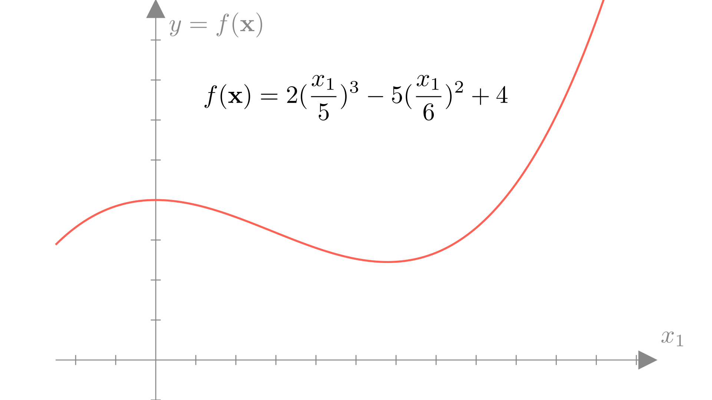Linear Functions
A linear function is any function \(f\) where the following conditions always hold: \[ f(\mathbf{x} + \mathbf{y}) =f(\mathbf{x}) + f(\mathbf{y})\] and \[ f(a\mathbf{x}) = a f(\mathbf{x})\] For a linear function, the output can be defined as a weighted sum of the inputs.
\[ f(\mathbf{x}) = \sum_{i=1}^n x_iw_i + b \]
Here, \(w_i\) and \(b\) are the parameters of the function.
Linear Functions
We can also write a linear function using a dot-product between our input \(\mathbf{x}\) and parameter vector \(\mathbf{w}\) as:
\[ f(\mathbf{x}) = \mathbf{x} \cdot \mathbf{w} + b \quad \text{or} \quad f(\mathbf{x}) = \mathbf{x}^T \mathbf{w} + b \]
We typically refer to \(\mathbf{w}\) specifically as the weight vector (or weights) and \(b\) as the bias.
\[ \textbf{Linear function: }f(\mathbf{x}) = \mathbf{x}^T\mathbf{w}+b,\quad \textbf{Parameters:}\quad \big(\text{Weights: } \mathbf{w},\ \text{Bias: } b \big) \]
Linear Functions
In one dimension, a linear function is always a line, for example:
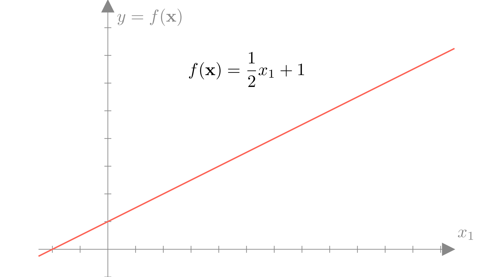Linear Functions
In higher dimensions, it is a plane or hyperplane:
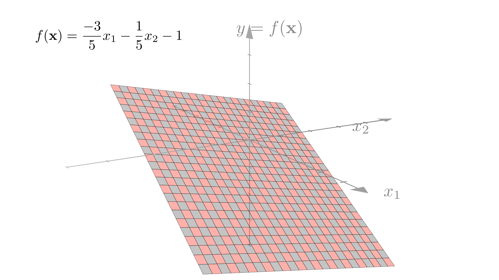Linear Functions
In numpy we can easily write a linear function of this form:
Handling bias compactly
\[ \mathbf{x} = \begin{bmatrix} x_1 \\ x_2 \\ \vdots \\ x_n \end{bmatrix} \longrightarrow \mathbf{x}_{aug}= \begin{bmatrix} x_1 \\ x_2 \\ \vdots \\ x_n \\ 1 \end{bmatrix} \quad \text{and} \quad \mathbf{w} = \begin{bmatrix} w_1 \\ w_2 \\ \vdots \\ w_n \end{bmatrix} \longrightarrow \mathbf{w}_{aug}= \begin{bmatrix} w_1 \\ w_2 \\ \vdots \\ w_n \\ b \end{bmatrix} \]
We can easily see then that using this notation:
\[ f(\mathbf{x}) = \mathbf{x}^T \mathbf{w} +b = \mathbf{x}_{aug}^T \mathbf{w}_{aug} \]
We won’t bother with the \(aug\) notation and just assume that any linear function defined as \(f(\mathbf{x})=\mathbf{x}^T\mathbf{w}\) can be defined to include a bias implicitly.
In numpy this is similarly straightforward:
Datasets and observations
Dataset \(\mathbf{D}\) made up of \(N\) pairs of inputs ( \(\mathbf{x}\) ) and outputs ( \(y\) ):
\[ \mathbf{D} = \{ (\mathbf{x}_1, y_1),\ (\mathbf{x}_2, y_2),\ ...\ (\mathbf{x}_N, y_N)\} \]
We call each of these pairs an observation.
Fuel efficiency
Let’s imagine we’re designing a car and we would like to know what the fuel efficiency of the car we’re designing will be in miles per gallon (MPG). Ideally we would have access to a function that would give us the MPG rating if we provide some features.
\[ \text{mpg} = f(\text{weight},\ \text{horsepower}...) \]
We don’t know the exact relationship between a car’s features and fuel efficiency. However, we can look at other cars on the market and see what the corresponding inputs and outputs would be:
\[ \text{Honda Accord: } \begin{bmatrix} \text{Weight:} & \text{2500 lbs} \\ \text{Horsepower:} & \text{ 123 HP} \\ \text{Displacement:} & \text{ 2.4 L} \\ \text{0-60mph:} & \text{ 7.8 Sec} \end{bmatrix} \longrightarrow \text{ MPG: 33mpg} \]
\[ \text{Dodge Aspen: } \begin{bmatrix} \text{Weight:} & \text{3800 lbs} \\ \text{Horsepower:} & \text{ 155 HP} \\ \text{Displacement:} & \text{ 3.2 L} \\ \text{0-60mph:} & \text{ 6.8 Sec} \end{bmatrix} \longrightarrow \text{ MPG: 21mpg} \]
\[ \vdots \quad \vdots \]
Fuel efficiency
Our dataset will be this collection of data that we have for all other cars. In general, each observation in this dataset will correspond to a car.
\[ \text{Dataset: } \mathbf{D}=\{(\mathbf{x}_i,\ y_i) \text{ for } i\in 1...N\} \]
\[ \text{Input: } \mathbf{x}_i= \begin{bmatrix} \text{Weight} \\ \text{Horsepower} \\ \text{Displacement} \\ \text{0-60mph} \end{bmatrix}, \quad \text{Output: } y_i = MPG \]
Fuel efficiency
Let’s take a look at a single feature: the weight of a car.
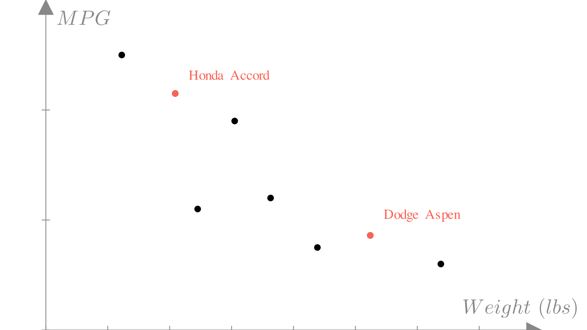Prediction functions
How do we predict the output for an input that we haven’t seen before?
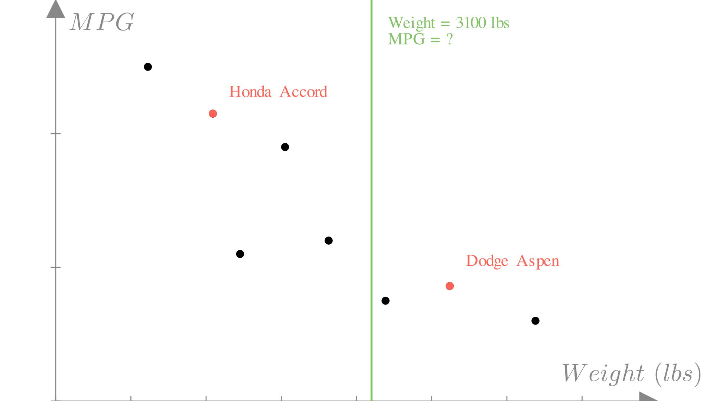Prediction functions
Model our unknown function with a known function that we can evaluate at any input. Chose a function \(f\) such that for any observation our dataset, the output of this function approximates the true target output that we observed.
\[ f(\mathbf{x}_i) \approx y_i, \quad \forall (\mathbf{x}_i, y_i) \in \mathbf{D} \]
Linear interpolation
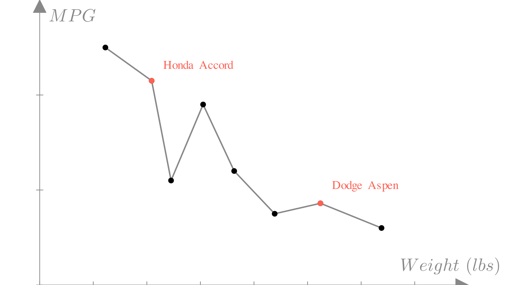In some cases this can be a reasonable approach! In fact it’s how the plt.plot function works.
Linear interpolation
Real data however is messy. Measurements in our dataset might not be 100% accurate or might even conflict!
\[(\text{Weight: }3100, \text{MPG: } 34), \quad (\text{Weight: }3100, \text{MPG: } 23) \longrightarrow f(3100) = ?\]
Linear interpolation
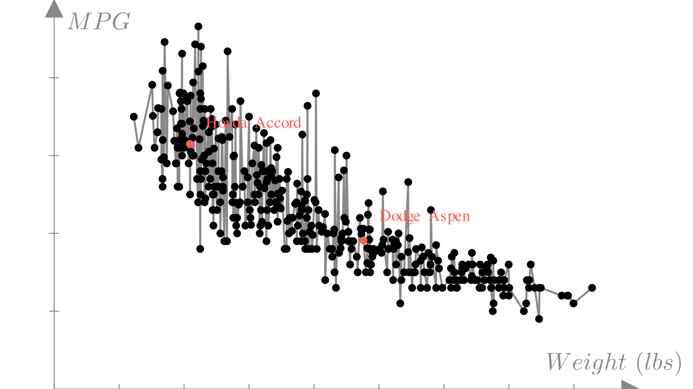Linear regression
Linear regression models an unknown function with a linear function.
\[ f(\mathbf{x}) = \mathbf{x}^T\mathbf{w} = \sum_{i=1}^n x_i w_i \]
Meaning that the output will be a weighted sum of the features of the input.
\[ \text{Predicted MPG} = f(\mathbf{x})= \]
\[ (\text{weight})w_1 + (\text{horsepower})w_2 + (\text{displacement})w_3 + (\text{0-60mph})w_4 + b \]
Or in matrix notation:
\[ f(\mathbf{x})= \begin{bmatrix} \text{Weight} \\ \text{Horsepower} \\ \text{Displacement} \\ \text{0-60mph} \\ 1 \end{bmatrix} \cdot \begin{bmatrix} w_1 \\ w_2\\ w_3 \\ w_4\\ b\end{bmatrix} \]
Linear regression
Linear regression
We could chose many different linear functions to make predictions:
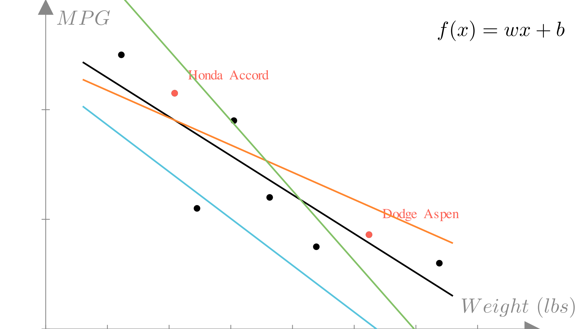Residuals and error
The residual or error of a prediction is the difference between the prediction and the true output:
\[ e_i = y_i - f(\mathbf{x}_i) \]
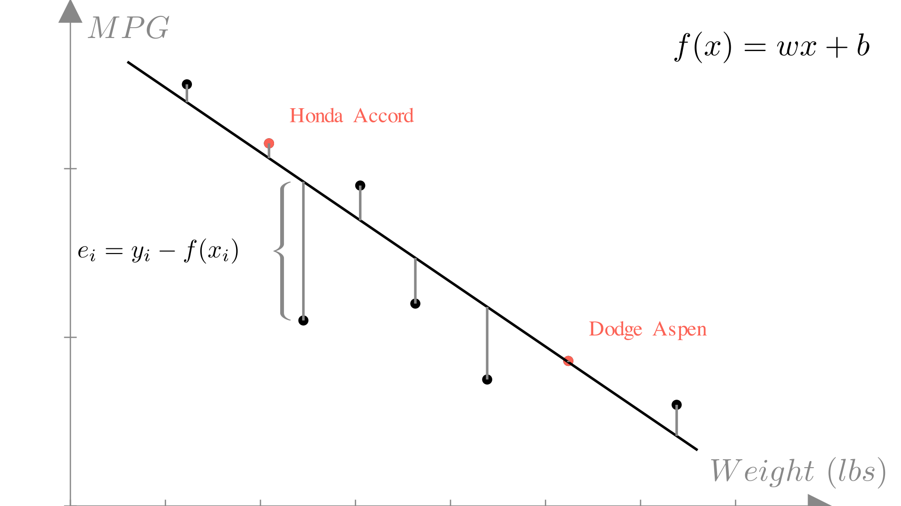Mean squared error
We need a measure of error for the entire dataset. The mean squared error is the average of the residual squared for each observation in our dataset:
\[ MSE = \frac{1}{N}\sum_{i=1}^N (f(\mathbf{x}_i) - y_i)^2 = \frac{1}{N}\sum_{i=1}^N (\mathbf{x}_i^T\mathbf{w} - y_i)^2 \]It follows that the best choice of linear function \(f^*\) is the one that minimizes the mean squared error for our dataset. \[\mathbf{w}^* = \underset{\mathbf{w}}{\text{argmin}} \frac{1}{N}\sum_{i=1}^N (\mathbf{x}_i^T\mathbf{w} - y_i)^2 \]
Loss functions
Mean squared error depends on the data inputs \((\mathbf{x}_1,…,\mathbf{x}_N)\), the data targets \((y_1,…,y_N)\) and the parameters \((\mathbf{w})\). So we can express the MSE as a function of all three:
\[ MSE(\mathbf{w}, \mathbf{X}, \mathbf{y}) = \frac{1}{N}\sum_{i=1}^N (\mathbf{x}_i^T\mathbf{w} - y_i)^2 \]
Here we have used \(\mathbf{X}\) and \(\mathbf{y}\) to refer to the entire collection of inputs and outputs from our dataset \(( \mathbf{D})\) respectively, so:
\[ \mathbf{X} = \begin{bmatrix}\mathbf{x}_1 \\ \mathbf{x}_2 \\ \vdots \\ \mathbf{x}_N \end{bmatrix} = \begin{bmatrix}x_{11} & x_{12} & \dots & x_{1n} \\ x_{21} & x_{22} & \dots & x_{2n}\\ \vdots & \vdots & \ddots & \vdots \\ x_{N1} & x_{N2} & \dots & x_{Nn} \end{bmatrix}, \quad \mathbf{y} = \begin{bmatrix}y_1 \\ y_2 \\ \vdots \\ y_N \end{bmatrix} \]
Loss functions
This is an example of loss function. We can drop the explicit dependence on \(\mathbf{X}\) and \(\mathbf{y}\), looking at the loss as purely a function of our choice of parameters:
\[ \textbf{Loss}(\mathbf{w})= MSE(\mathbf{w}, \mathbf{X}, \mathbf{y}) = \frac{1}{N}\sum_{i=1}^N (\mathbf{x}_i^T\mathbf{w} - y_i)^2 \]
Again, if our goal is to minimize error, we want to choose the parameters \(\mathbf{w}^*\) that minimize this loss:
\[ \mathbf{w}^* = \underset{\mathbf{w}}{\text{argmin}}\ \textbf{Loss}(\mathbf{w})= \underset{\mathbf{w}}{\text{argmin}} \frac{1}{N}\sum_{i=1}^N (\mathbf{x}_i^T\mathbf{w} - y_i)^2 \]
Visualizing loss
If we consider the case where our inputs are 1-dimensional, as in the weight example above, then our parameter vector \(\mathbf{w}\) only has 2 entries: \(w_1\) and \(b\).

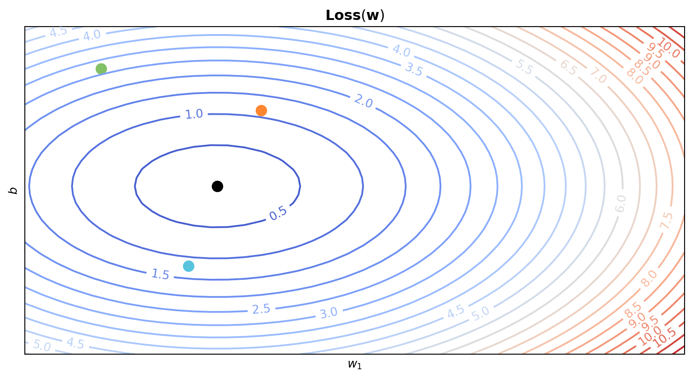
We see that point where the loss is lowest, corresponds to the line that best fits our data!
Gradient descent
We have a function \(f(\mathbf{\cdot})\) and we would like find the input \(\mathbf{w}^*\) that minimizes the output of the function:
\[ \text{Find: } \mathbf{w}^* = \underset{\mathbf{w}}{\text{argmin}}\ f(\mathbf{w}) \]
We don’t know how to find \(\mathbf{w}^*\) directly, but if we have an initial guess \(\mathbf{w}^{(0)}\), we can try to update our guess to improve it.
\[ \mathbf{w}^{(1)} \leftarrow \mathbf{w}^{(0)} + \mathbf{g} \]
[ 0.5 -0.6]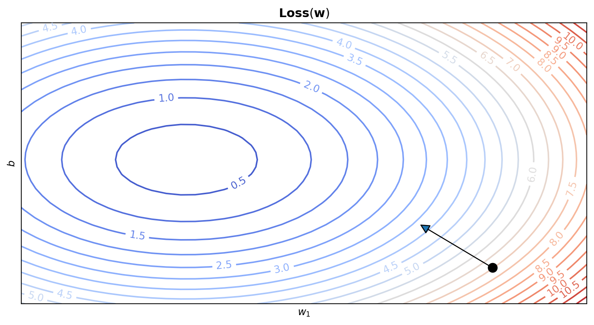
Gradient descent
The gradient of a function at point \(\mathbf{x}\) corresponds to the slope of \(f\) at \(\mathbf{w}\), or equivalently the direction of maximum change. This gives us a natural choice for the update to our guess.
\[ \mathbf{w}^{(1)} \leftarrow \mathbf{w}^{(0)} - \nabla f(\mathbf{w}^{(0)}) \]
Gradient descent
We can repeat this process many times, continuously updating our estimate.
\[ \text{For }i \text{ in 1,...,T}\text{ :} \quad \mathbf{w}^{(i+1)} \leftarrow \mathbf{w}^{(i)} - \nabla f(\mathbf{w}^{(i)}) \]
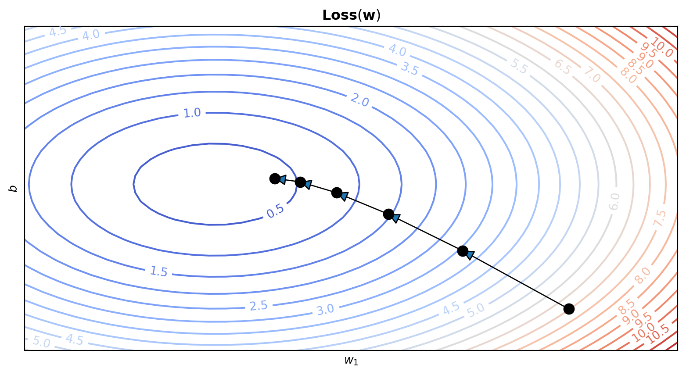
Gradient descent convergence
At it’s minimum value \(\mathbf{w}^*\), a function \(f\) must have a gradient of \(\mathbf{0}\).
\[ \nabla f(\mathbf{w}^*) = \mathbf{0} \]
It follows that:
\[ \mathbf{w}^{*} = \mathbf{w}^{*} - \nabla f(\mathbf{w}^{*}) \]
We could write our algorithm to account for this:
\[ \text{While } \nabla f(\mathbf{w}^{(i)}) \neq \mathbf{0} \text{ :} \quad \mathbf{w}^{(i+1)} \leftarrow \mathbf{w}^{(i)} - \nabla f(\mathbf{w}^{(i)}) \]
Gradient descent convergence
Stops the iteration when the gradient magnitude is sufficiently small:
\[ \text{While } ||\nabla f(\mathbf{w}^{(i)})||_2 > \epsilon \text{ :} \quad \mathbf{w}^{(i+1)} \leftarrow \mathbf{w}^{(i)} - \nabla f(\mathbf{w}^{(i)}) \]
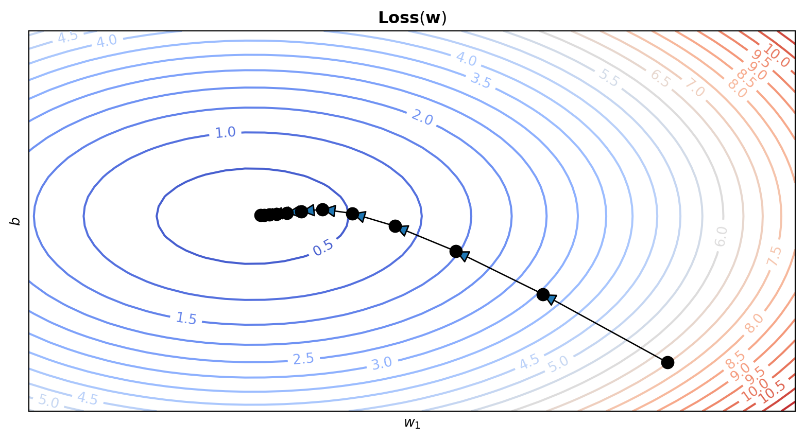
Step sizes
This approach says that when the magnitude of the gradient is large, we should take a large step, and vice-versa.
Step sizes
However, if we take too large a step, we can overshoot the minimum entirely! In the worst case, this can lead to divergence, where gradient descent overshoots the minimum more and more at each step.
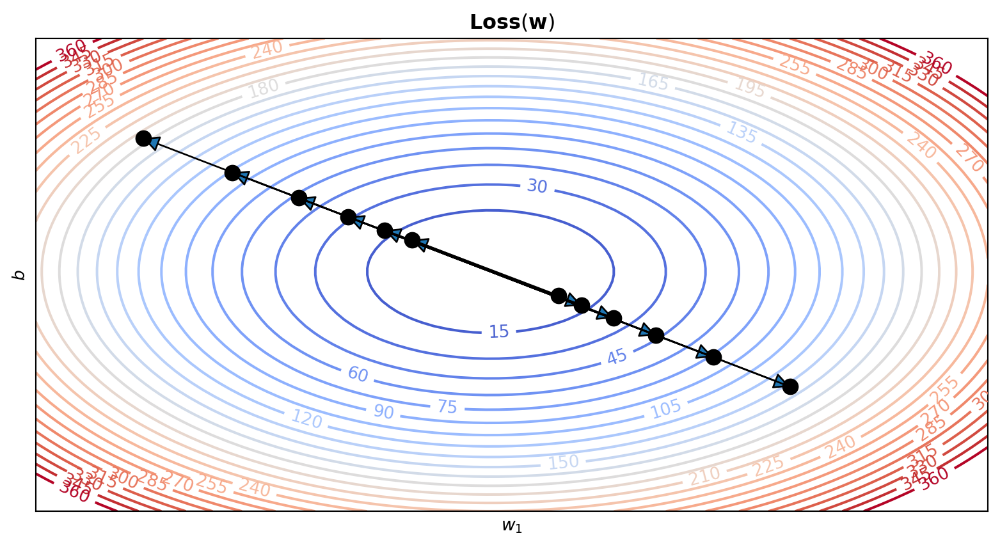
Step sizes
The gradient is making a linear approximation to the function. A strait line has no minimum, so the gradient has no information about where along the approximation the true minimum will be.
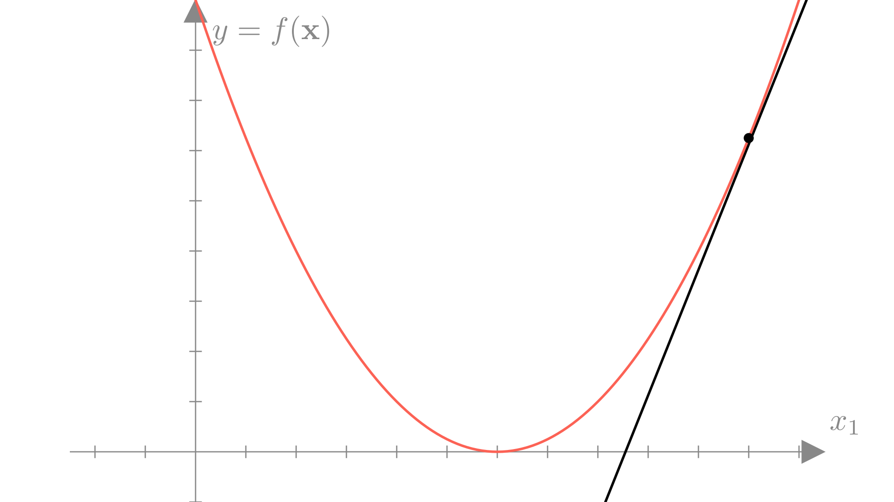Step sizes
The gradient gives us the direction of maximum change of the function, but this is only true in the limit of a very small step.
\[ \frac{df}{d\mathbf{w}}= \underset{\gamma \rightarrow 0}{\lim}\ \underset{\|\mathbf{\epsilon}\|_2 < \gamma}{\max} \frac{f(\mathbf{w} + \mathbf{\epsilon}) - f(\mathbf{w})}{\|\mathbf{\epsilon}\|_2} \]
In higher dimensions, the gradient may not point directly to the minimum.
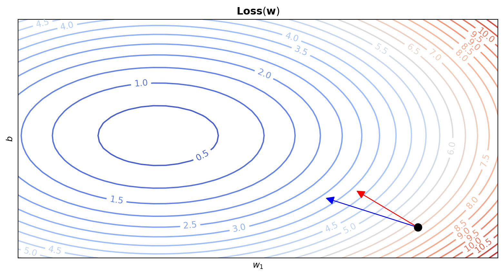
Step sizes
We can introduce an additional control to our algorithm: a step size or learning rate. This is a small constant \(\alpha\), that we will multiply the gradient by in each of our updates.
\[ \mathbf{w}^{(i+1)} \leftarrow \mathbf{w}^{(i)} - \alpha \nabla f(\mathbf{w}^{(i)}) \]
Using a small learning rate \((\alpha << 1)\) will make gradient descent slower, but much more reliable.
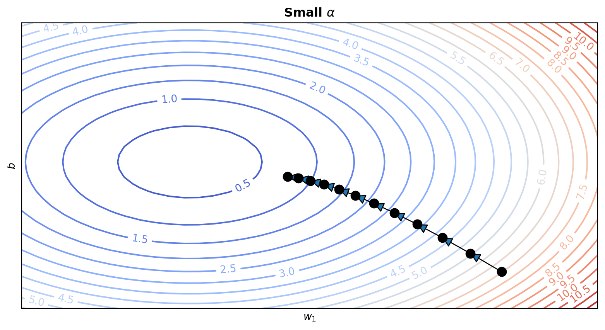
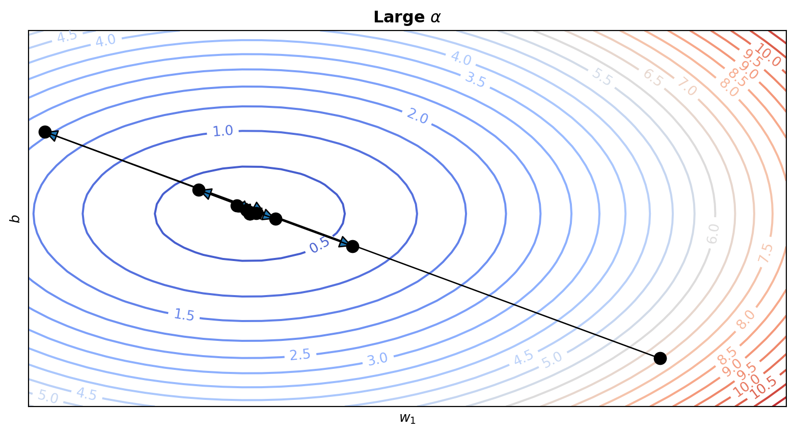
Optimizing linear regression
We can apply gradient descent to linear regression in order to find the parameters that minimize the mean squared error loss.
\[ \nabla_{\mathbf{w}} \textbf{MSE}(\mathbf{w}, \mathbf{X}, \mathbf{y}) = \frac{d}{d\mathbf{w}}\bigg( \frac{1}{N}\sum_{i=1}^N (\mathbf{x}_i^T\mathbf{w} - y_i)^2 \bigg) \]
\[ = \frac{2}{N}\sum_{i=1}^N (\mathbf{x}_i^T\mathbf{w} - y_i)\mathbf{x}_i \]
With this gradient our gradient descent update becomes:
\[ \mathbf{w}^{(i+1)} \longleftarrow \mathbf{w}^{(i)} - \alpha\bigg(\frac{2 }{N}\bigg)\sum_{i=1}^N (\mathbf{x}_i^T\mathbf{w}^{(i)} - y_i)\mathbf{x}_i \]
Optimizing linear regression directly
We know that at the minimum, the gradient must be \(\mathbf{0}\), so the following condition must hold:
\[ \mathbf{0} = \bigg( \frac{2}{N}\bigg)\sum_{i=1}^N (\mathbf{x}_i^T\mathbf{w} - y_i)\mathbf{x}_i \]
We can solve for a \(\mathbf{w}\) that satisfied this condition by first dropping the constant \(\frac{2}{N}\).
\[ \mathbf{0} = \sum_{i=1}^N (\mathbf{x}_i^T\mathbf{w} - y_i)\mathbf{x}_i \]
\[ \mathbf{0} = \sum_{i=1}^N \big( \mathbf{x}_i\mathbf{x}_i^T\mathbf{w} - y_i \mathbf{x}_i \big) \]
\[ \sum_{i=1}^N y_i \mathbf{x}_i =\bigg(\sum_{i=1}^N \mathbf{x}_i\mathbf{x}_i^T \bigg) \mathbf{w} \]
Optimizing linear regression directly
Note that \(\mathbf{x}_i \mathbf{x}_i^T\) is a vector outer product:
\[ \mathbf{x}_i \mathbf{x}_i^T = \begin{bmatrix} x_{i1} \\ x_{i2} \\ \vdots \\ x_{in}\end{bmatrix} \begin{bmatrix} x_{i1} & x_{i2} & \dots & x_{in}\end{bmatrix} = \begin{bmatrix} x_{i1} x_{i1} & x_{i1} x_{i2} & \dots & x_{i1} x_{in} \\ x_{i2} x_{i1} & x_{i2} x_{i2} & \dots & x_{i2} x_{in} \\ \vdots & \vdots & \ddots & \vdots \\ x_{in} x_{i1} & x_{in} x_{i2} & \dots & x_{in} x_{in} \\ \end{bmatrix} \]
Thus \(\bigg(\sum_{i=1}^N \mathbf{x}_i\mathbf{x}_i^T \bigg)\) is a matrix.
Optimizing linear regression directly
\[ \sum_{i=1}^N y_i \mathbf{x}_i =\bigg(\sum_{i=1}^N \mathbf{x}_i\mathbf{x}_i^T \bigg) \mathbf{w} \]
Multiplying both sides by the inverse \(\bigg(\sum_{i=1}^N \mathbf{x}_i\mathbf{x}_i^T \bigg)^{-1}\) we get:
\[ \bigg(\sum_{i=1}^N \mathbf{x}_i\mathbf{x}_i^T \bigg)^{-1} \bigg(\sum_{i=1}^N y_i \mathbf{x}_i\bigg) = \mathbf{w}^* \]
Optimizing linear regression directly
\[ \bigg(\sum_{i=1}^N \mathbf{x}_i\mathbf{x}_i^T \bigg)^{-1} \bigg(\sum_{i=1}^N y_i \mathbf{x}_i\bigg) = \mathbf{w}^* \]
We can write this more compactly using the stacked input matrix and label vector notation we saw in homework 1.
\[ \mathbf{X} = \begin{bmatrix} \mathbf{x}_{1} \\ \mathbf{x}_{2} \\ \vdots \\ \mathbf{x}_{N} \end{bmatrix},\quad \mathbf{y} = \begin{bmatrix} y_{1} \\ y_{2} \\ \vdots \\ y_{N} \end{bmatrix} \]
In this case, the expression becomes:
\[\mathbf{w}^* = \big( \mathbf{X}^T \mathbf{X} \big)^{-1} \big(\mathbf{y}\mathbf{X}\big)\]
Maximum likelihood estimation
Normal distributions
The Normal distribution (also known as the Gaussian distribution) is a continuous probability distribution with the following probability density function:
\[ p(y) = \frac{1}{\sigma \sqrt{2 \pi}} \mathbf{exp}\bigg(-\frac{1}{2\sigma^2} (y -\mu)^2\bigg) \]

Linear regression as a probabilistic model
The probabilistic model for linear regression will make the assumption that the output is normally distributed conditioned on the input:
\[ y_i \sim N\big(\mathbf{x}_i^T \mathbf{w},\ \sigma^2\big) \]
We can write the conditional probability or likelihood of an output as:
\[ p(y_i\mid\mathbf{x}_i, \mathbf{w}) = \frac{1}{\sigma \sqrt{2 \pi}} \mathbf{exp}\bigg(-\frac{1}{2\sigma^2} (y_i - \mathbf{x}_i^T\mathbf{w})^2\bigg) \]

Image credit: Lily Chen Towards Data Science
Maximum likelihood estimation
How do we find the optimal value for \(\mathbf{w}\)? Choose the \(\mathbf{w}\) that maximizes the likelihood (conditional probability) of all of the outputs in our dataset:
\[ \mathbf{w}^* = \underset{\mathbf{w}}{\text{argmax}} \ p(\mathbf{y} \mid \mathbf{X}, \mathbf{w}) =\underset{\mathbf{w}}{\text{argmax}} \ p(y_1,...,y_N \mid \mathbf{x}_1, ...,\mathbf{x}_N, \mathbf{w}) \]
Generally our model also assumes conditional independence across observations so:
\[ p(y_1,...,y_N \mid \mathbf{x}_1, ...,\mathbf{x}_N, \mathbf{w}) = \prod_{i=1}^N p(y_i\mid \mathbf{x}_i, \mathbf{w}) \]
Maximum likelihood estimation
Equivalently frame the optimal value in terms of the negative log-likelihood rather than the likelihood.
\[ \underset{\mathbf{w}}{\text{argmax}} \prod_{i=1}^N p(y_i\mid \mathbf{x}_i, \mathbf{w}) = \underset{\mathbf{w}}{\text{argmin}} - \sum_{i=1}^N \log p(y_i \mid \mathbf{x}_i, \mathbf{w}) = \textbf{NLL}(\mathbf{w}, \mathbf{X}, \mathbf{y}) \]
We see that the negative log-likelihood is a natural loss function to optimize to find \(\mathbf{w}^*\).
\[ \textbf{Loss}(\mathbf{w}) =\textbf{NLL}(\mathbf{w}, \mathbf{X}, \mathbf{y})=- \sum_{i=1}^N \log p(y_i \mid \mathbf{x}_i, \mathbf{w}) \]
Maximum likelihood estimation
We can write out the negative log-likelihood explicitly using the normal PDF:
\[ \textbf{NLL}(\mathbf{w}, \mathbf{X}, \mathbf{y}) = -\sum_{i=1}^N\log\bigg[\frac{1}{\sigma \sqrt{2 \pi}} \text{exp}\bigg(-\frac{1}{2\sigma^2} (y_i - \mathbf{x}_i^T\mathbf{w})^2\bigg)\bigg] \]
\[ = \frac{1}{2\sigma^2} \sum_{i=1}^N(y_i - \mathbf{x}_i^T\mathbf{w})^2 - \frac{N}{\sigma \sqrt{2 \pi}} \]
Maximum likelihood estimation
\[ \textbf{NLL}(\mathbf{w}, \mathbf{X}, \mathbf{y}) = \frac{1}{2\sigma^2} \sum_{i=1}^N(y_i - \mathbf{x}_i^T\mathbf{w})^2 - \frac{N}{\sigma \sqrt{2 \pi}} \]
We see that this loss is very similar to the MSE loss. Taking the gradient this becomes even more clear.
\[ \nabla_{\mathbf{w}}\textbf{NLL}(\mathbf{w}, \mathbf{X}, \mathbf{y}) = \frac{d}{d\mathbf{w}}\bigg( \frac{1}{2\sigma^2} \sum_{i=1}^N(y_i - \mathbf{x}_i^T\mathbf{w})^2 - \frac{N}{\sigma \sqrt{2 \pi}} \bigg) \]
\[ = \frac{1}{2\sigma^2}\sum_{i=1}^N (\mathbf{x}_i^T\mathbf{w} - y_i)\mathbf{x}_i \]
The optimal value for \(\mathbf{w}\) is the same for both MSE and negative log-likelihood and the optimal value does not depend on \(\sigma^2\)!
\[ \underset{\mathbf{w}}{\text{argmin}}\ MSE(\mathbf{w}, \mathbf{X}, \mathbf{y}) = \underset{\mathbf{w}}{\text{argmin}}\ \textbf{NLL}(\mathbf{w}, \mathbf{X}, \mathbf{y}) \]